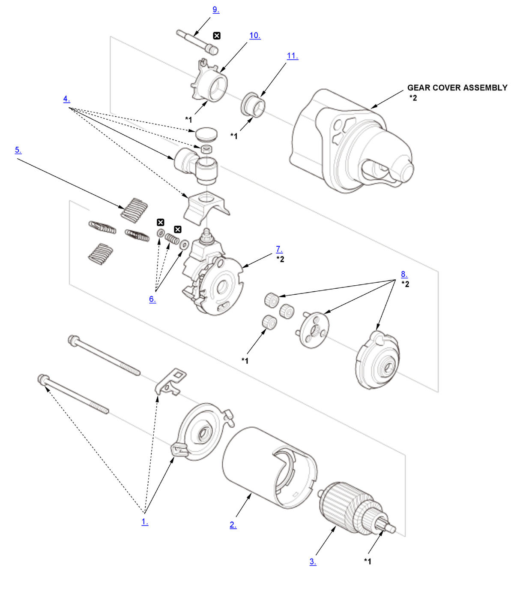

Starter Overhaul (K20C2): Disassembly: Procedure
NOTE:
Numbered call-outs in figure pertain to list numbers in following procedure.

Courtesy of HONDA, U.S.A., INC. |
Replace |
| *1 | Do not wipe off the special grease applied. |
| *2 | These parts have inspection items. |
- End Cover - Remove
- Armature Housing - Remove
- Armature - Remove
- Terminal - Remove
- Brush Spring - Remove
- Moving Contact - Remove
- Brush Holder Assembly - Remove
- Planetary Gear Assembly - Remove
- Switch Shaft - Remove
- Switch Plunger - Remove
- Gear Plunger - Remove